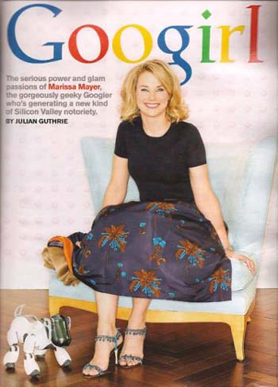

Ženski geek i kolači
ãetrtek, 26. marec 2009. u 11:39 AM
Piše: La Lara
Rubrike: Creative Economy | Gastronomija/Enologija | Internet
 Marissa Mayer je potpredsednica Googla, zadužena, između ostalog za uvođenje novih Google proizvoda i dizajn. Završila je engineering (ne znam tačno kakav) na Stanfordu. Po sopstvenim rečima je geek, i zbog toga se odlično oseća u Google, jer je okružena sličnim ljudima. Uz to kaže da je po prirodi stidljiva, ali da se tako ne oseća u ovoj kompaniji, zbog strasti prema poslu i okruženja koje joj odgovara.
Takođe voli cupcakes. Misli da bi se od njih mogao napraviti dobar biznis. A voli i sama da ih pravi.
I, šta se dešava kada se u jednu akciju stave (ženski) geek i kolači? Desi se vrlo analitičan pristup mešenju:
MARISSA: Even in my baking I’m very analytical. But my key point about cupcakes has gotten lost in all this – it was a business prediction around the fact that I do think that cupcakes are something that consumers, right now, are likely to be very interested in.
LESLEY: OK, Marissa, what do you mean by spreadsheets? You’ve analyzed what?
MARISSA: I took the yellow cake recipe from about ten different cookbooks —
LESLEY: Yes.
MARISSA: Each column of the spreadsheet was a different cookbook; each row of the spreadsheet was a different ingredient.
LESLEY: Oh, my goodness.
MARISSA: For example, there were three cups in this recipe, four cups in that recipe. Eggs: two here, three here. Then you look at the differences and then come up with a recipe of your own. I say, “OK, if I take sort of the best from this and the best from that, looking at the ratios, what can you design?” I think that’s sort of that geeky gene in me: overanalyzing things, wanting to understand them. Be it cupcakes or be it an interface problem. I think the real key here isn’t about the girly things; it’s about being analytical, and really trying to break down and understand problems.
Meni je ovaj pristup totalno hilarious. Na pozitivan način. Iako mi lično nije blizak.
Btw, Da li neko zna za mesto sa cupcakes u Beogradu?
***
Iz Yahti arhive:
- Mart 2007: Eurotrash, Makedonska vina, Koktel priče
 RSS feed
RSS feed
 sadržaji se objavljuju pod
sadržaji se objavljuju pod
Komentari
Eto ti biznis ideje. :) Zaposliš Draganu (pogledaj pod Sitni kolači na http://moje-grne.com/vesnin-katering/ - nije mi samo jasno ko je Vesna? :)) i otvorite novu fancy cupcake poslastičarnicu u Beogradu. :)
Inače Marissin pristup je genijalan. Razmisliću o tome kada se budem bavila nekim poslovnim izazovima. :)
Maja | 27.03.09 14:01
Ja mislim Majo da si ti prava osoba da joj se svidi Marissin pristup. Mislim, i meni je super, ali ga def. ne bih primenila na ovu tematiku.
Sto se tice biznis ideje, da, bilo bi jako cool
LLara | 27.03.09 22:38
Zamisli danas sam pekla cokoladni kolac i u receptu kao i u uputstvu za rernu pise da se pece 60 min. Nisam im bas verovala jer mi je delovalo dugo, ali eto poslusah ih i kolac se malo prepekao. Eto, da sam konsultovala vise recepata i napravila Excel tabelu mozda se to ne bi desilo. :))
Maja | 29.03.09 22:50
Pristup je genijalan! Kako, uvek imam problem sa razlicitim receptima, posebno otkad ih gledam na internetu, ovo je ocigledno resenje.
A o cupcakes ne bih... Plasim se same sebe.
Feisty | 08.04.09 05:54
Nije loša ova ideja za posao :) ovih dana sam očajna domaćica :)
A što se Vesne tiče, eeeeee, pa ona nije ja :)
Dragana | 16.06.09 16:14